MOH AGUS
SASTRO NEGORO
Arsitek Ekosistem Digital. Menggabungkan kode reaktif, seni visual, dan empati sosial untuk menciptakan sistem yang berdampak di lingkungan sekolah.
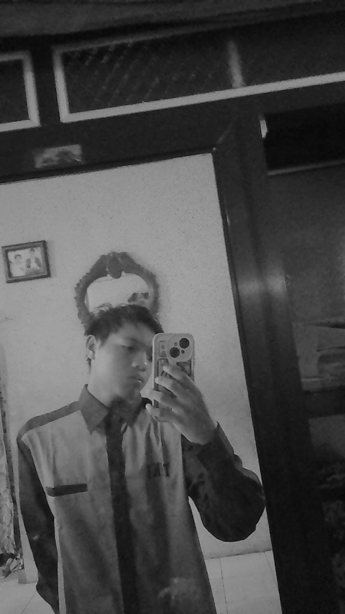
Integrasi Teknologi, Kreativitas, & Pengalaman
Berasal dari Banyuwangi, perjalanan saya sebagai siswa TJKT di SMK PGRI 1 Giri bukan sekadar tentang mempelajari teknologi, tetapi tentang bagaimana teknologi dapat memberikan solusi nyata. Saat ini, saya memfokuskan energi saya pada eksplorasi Development dan AI Agent melalui ekosistem e-Aspirasi Grisawangi.
Sisi logis saya sebagai pengembang selalu diseimbangkan oleh insting estetika saya sebagai Leader of Desain Grisawangi. Saya memimpin arah visual sekolah untuk memastikan setiap karya grafis memiliki standar profesional.
Lebih dari sekadar teknisi dan kreator, jiwa sosial saya tersalurkan penuh sebagai Partner BK. Saya aktif mendampingi rekan sebaya hingga menjadi motor penggerak program-program besar seperti Jumat BK. Bagi saya, setiap baris kode, setiap piksel desain, dan setiap percakapan adalah bentuk dedikasi saya untuk almamater.
Nama Lengkap
Moh Agus Sastro Negoro
Kelas Saat Ini
XI TJKT 2
Nomor Telepon
0838-6340-0384
Alamat
Jl. Yos Sudarso, Klatakan, Kalipuro, Banyuwangi
Riwayat Pendidikan
SMK PGRI 1 Giri Banyuwangi
2024 - Sekarang
MTs Syamsul Huda
2020 - 2024
MI Bustanul Mubtadiin
2014 - 2020
Pengalaman Di SMK
Developer e-Aspirasi
Membangun ekosistem informasi sekolah, mencakup pendataan siswa, aspirasi cerdas, dan interaksi interaktif.
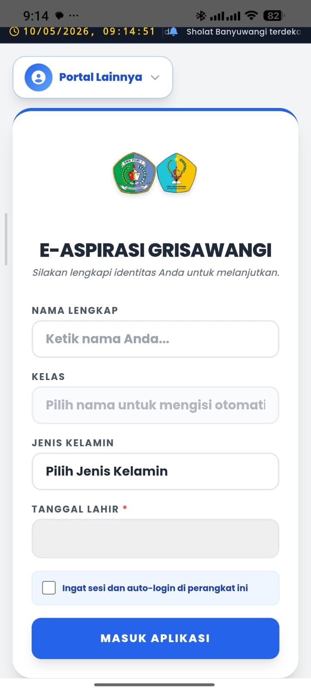

Leader of Desain
Menahkodai arah visual sekolah, memastikan karya estetik, komunikatif, dan berstandar profesional.
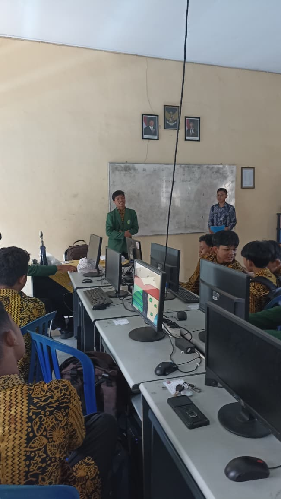
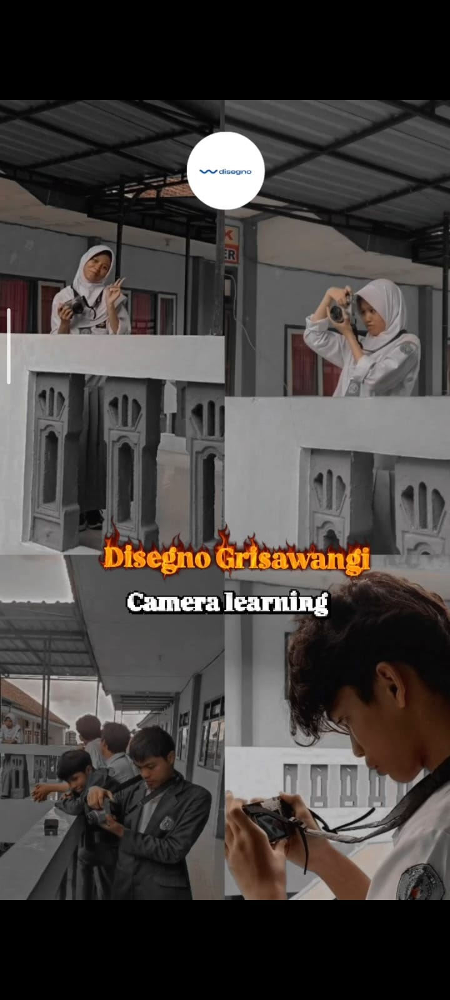
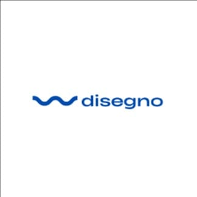
Partner BK
Menjadi jembatan empati, membantu pengalaman di kelas, dan motor penggerak program Jumat BK.
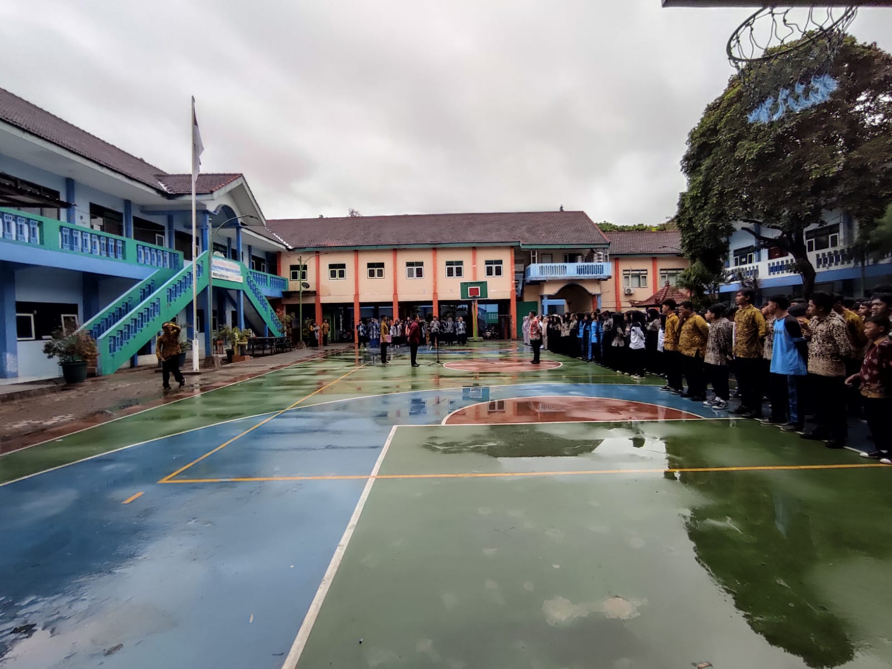
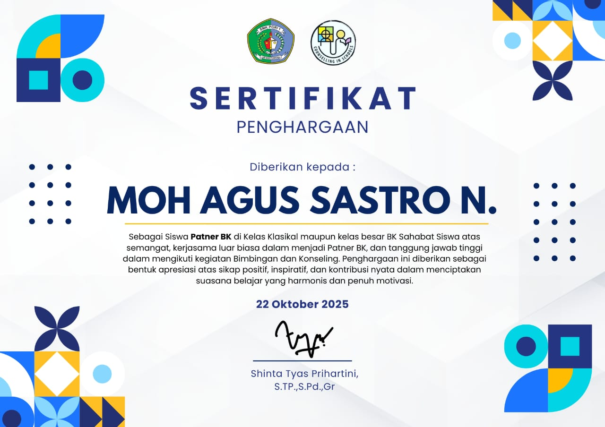
Dokumentator OSIS
Merangkai setiap kejadian penting sekolah menjadi cerita sinematik melalui lensa kamera.
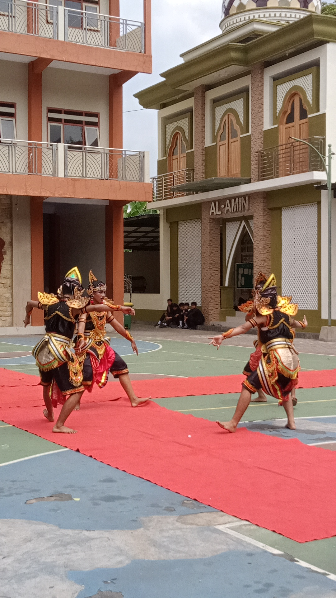
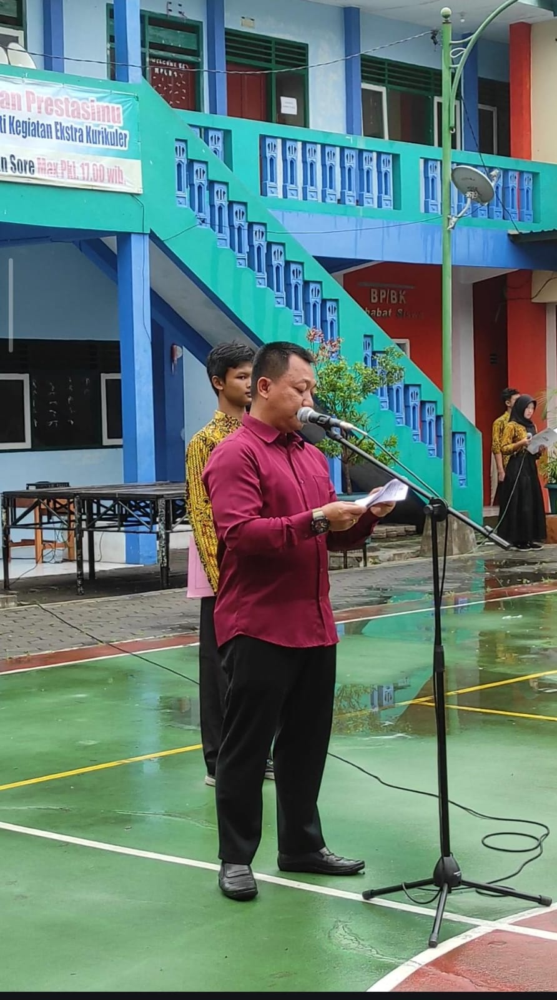
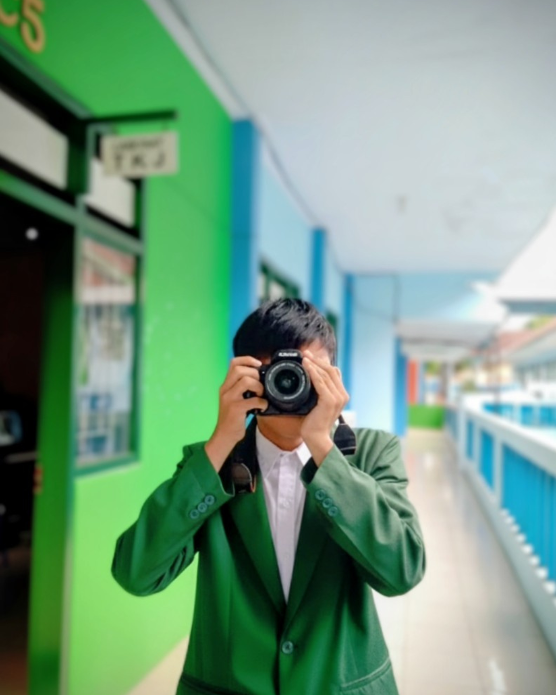
The Masterpiece
Core System & Student Service
Layanan siswa terpadu untuk menyuarakan aspirasi dengan aman. Termasuk integrasi Sistem Kedisiplinan Objektif (kalkulasi poin otomatis) dan Multi-Portal Access untuk guru.
Digital Attendance
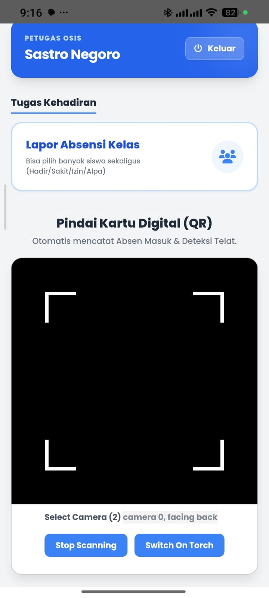
Pencatatan absensi digital harian yang cepat, akurat, berbasis scan QR terintegrasi.
Parental Portal
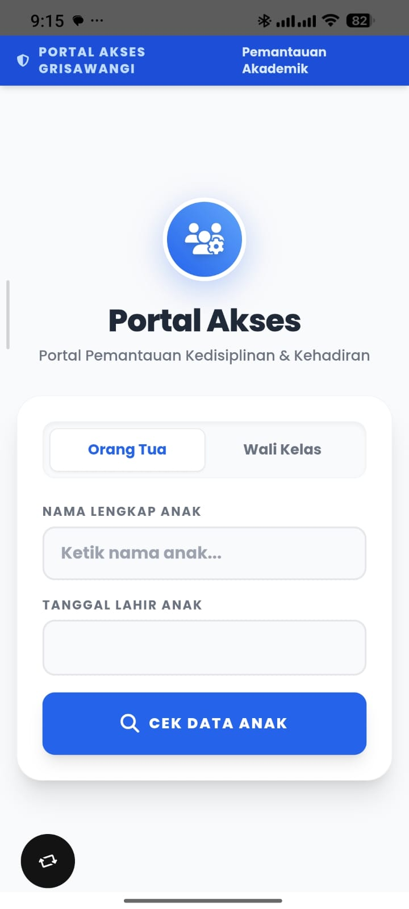
Jembatan digital untuk memantau data kehadiran dan kedisiplinan anak secara real-time.
Keahlian & Penjelajahan
Kemampuan Unggulan
Tingkat Penguasaan
Teknologi & Pengembangan
Eksplorasi Saat Ini
Integrasi Agen AI
Mendalami implementasi kecerdasan buatan dalam sistem web untuk menciptakan interaksi cerdas yang mempermudah navigasi pengguna.
Migrasi Basis Data Modern
Aktif mempelajari dan mengimplementasikan backend modern untuk memastikan arsitektur data lebih cepat dan aman.
Tinggalkan Komentar
Tinggalkan Pesan
Pesan Masuk Live
Menghubungkan ke database...
MARI BERKOLABORASI!
Punya ide proyek yang seru atau sekadar ingin berdiskusi soal teknologi dan desain? Jangan ragu!
Pilih jalur komunikasimu di pojok kiri bawah.